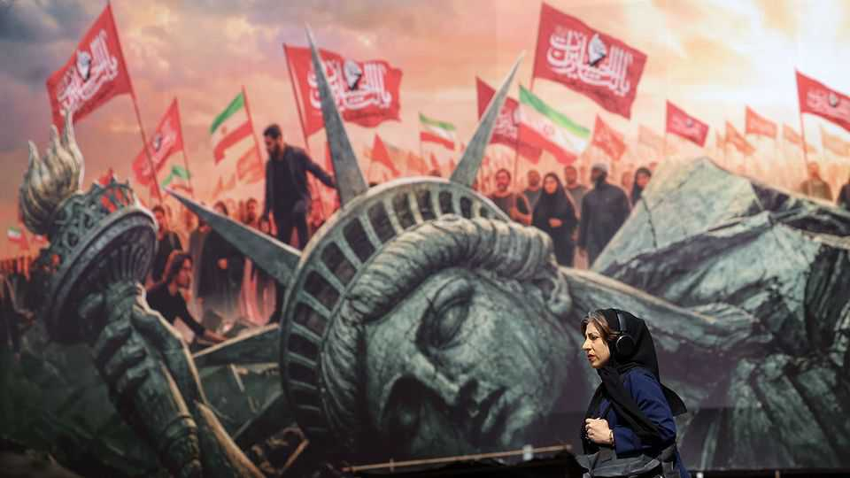

A military junta is consolidating power in Iran
That is bad news for Iranians and a possible peace deal with America

Aug 20th 2026
Over the past few days new billboards have appeared in Tehran, Iran’s capital. They depict the seven men who have taken charge in Iran since Ali Khamenei, the former supreme leader, was killed in an Israeli air strike on February 28th. Most remarkable is what the billboards do not show. There is no sign of Mojtaba Khamenei, the new supreme leader, who has not been seen in public since he was appointed. Nor are there any of the traditional religious symbols, such as the black and red flags of Imams Ali and Hussein. Only one of the seven men wears a turban.
The billboards are the latest sign that a new crop of leaders from the Islamic Revolutionary Guard Corps (IRGC) is consolidating power in Iran. Battle-hardened and results-driven, they are focused on security and repression, and are turning the theocratic foundations of the Islamic republic into a military dictatorship. Though they may not have entirely dropped a pragmatic approach to the conflict with America, military regimes often draw legitimacy from the constant threat of war. That suggests America and its allies should expect the new leadership to be more uncompromising than the previous one.
Fronting the self-declared “top of the country’s security and defence” on the billboard and dressed in a suit is Mohsen Rezaei. He is the new national-security adviser, a former presidential candidate and the longest-serving chief of the IRGC, which he led through the Iran-Iraq war of 1980-88 and the reconstruction that followed. Five men wear military fatigues, including the head of the navy who oversees Iran’s attacks on Gulf shipping. Next to him is Ahmad Vahidi, the IRGC’s commander-in-chief. Besides being instrumental in attempts to suppress the women’s movement to cast off the veil four years ago, he founded the Quds Force, the IRGC’s foreign arm, which nurtures its network of regional proxies. Hussein Taeb, the only man with a turban, used to run the IRGC’s intelligence agency and now heads the basij, its paramilitary volunteer force entrusted with keeping protesters off the streets.
Some veteran Iran-watchers see the men’s takeover as the triumph of hardliners, who seek the expulsion of America from the region, over pragmatists led by the speaker of parliament, Mohammad Bagher Ghalibaf. He was instrumental in negotiating a memorandum of understanding (MOU) with America that was signed on June 17th. The MOU promised Iran an end to nearly five decades of American opposition, protection for its regional proxies, sanctions relief, the repatriation of frozen oil revenues and $300bn to kick-start post-war reconstruction, in return for Iran eschewing its pursuit of a nuclear bomb and ending its blockade of the Strait of Hormuz.
Fighting resumed within days of the document’s signing. The Strait of Hormuz remains largely closed to shipping. On August 17th the deadline the MOU set for a more permanent peace deal expired; a day later Iran appeared to lob missiles at the United Arab Emirates, an American ally in the Gulf, which responded with a trade embargo. Some observers worry that the hardliners’ sense of having parried American and Israeli attacks has revived their conviction in the viability of force. “They’re squandering the victory [with the MoU],” fumes an academic in Tehran.
Domestically, too, the new regime looks harsh. The morality police are back in force in Tehran, raiding and closing cafés perceived as too lax on enforcing the veil. Public executions of anti-regime protesters have resumed. This month a photographer who captured Iran’s social malaise was gunned down with his mother and sister near a city in the north-west.
Yet other insiders and observers see more calculated realpolitik. The generals approved Mr Ghalibaf’s MoU. But without pressure, they are said to have reasoned, it stood no chance of being implemented. Despite the MOU, America set up its own blockade over the strait and negotiated the disarmament of Hizbullah, an important proxy, in concert with Israel. Iran could not even secure the transfer of frozen revenues that had been part of the deal.
The new regime could be keen on an agreement that delivers finance. After the Iran-Iraq war, Mr Rezaei spearheaded Iran’s reconstruction. As a presidential candidate, he called for foreign investment and a nuclear deal. “They’re saying isolation will kill us,” says another Iranian academic with ties to the new leaders. Nor, say some, are they fazed by diminishing Islamic norms. The crackdown on cafés may be merely a sop to their base. Some liken them to Muhammad bin Salman, the Saudi crown prince who is pursuing social liberalisation in place of political reform.
Yet all observers agree that there is a new style of leadership. For almost four decades Mr Khamenei balanced the competing interests of his realm, alternating reformists and hardliners. The new commanders, by contrast, favour action. Iranians and the world may yet rue the day Mr Khamenei left the scene. ■